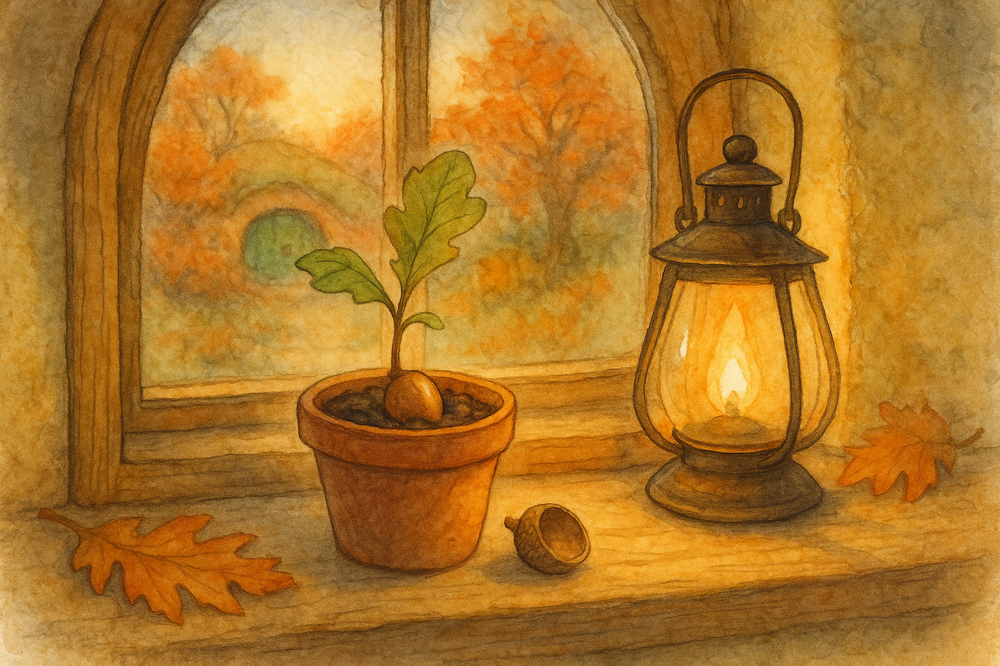

Fourth Age, in the Shire when the first crisp nights come early and the Hill smells of leaf-mould and pipe-ash.
There are seeds that fall and forget at once. There are others that fall and remember where they came from, and will not be hurried into being anything else.
It began, as Shire oddities often do, with sweeping.
After the first cold night of the season, when the grass carries a thin, silver taste and even a stout-hearted robin thinks twice before singing, my front step was littered with leaves. Most were the usual sort—yellow ash, a few curled beech scraps from the lane, and the stray hawthorn leaf that has travelled farther than its mother ever intended.
But in among them was an acorn—smooth, fat, and clean as if it had been polished with a handkerchief. Its cap was still on, and the little stalk was not snapped short, but neatly nipped, like the end of a good pencil.
Now, there are oaks in the Shire, to be sure; but there is only one oak that most hobbits think to call by name, and only one that folk will point at with their pipes as if it were a respectable old relative: the Party Tree in Hobbiton.
I did not say this aloud. It is poor manners to go about claiming kinship with famous trees. Still, I picked the acorn up and rolled it in my palm. It felt heavier than it ought, as though it carried not only a future but a small history in its shell.
“Best put that away,” said old Mr. Hoggins from next door, who had come over to borrow my long broom and stay for the conversation. “Acorns are trouble. You plant one and in fifty years you’ll be shading someone else’s washing-line.” “That sounds like a kindness,” I said. “Kindness is trouble if you’ve got to live under it,” he replied, which is exactly the sort of thing a hobbit will say with perfect sincerity.
I might have tossed it into the hedge and thought no more of it. But there are some objects—small as buttons—that have a way of catching on your mind. They snag you, lightly, and you find yourself circling back to them at odd moments, the way a tongue returns to a sore tooth.
So I took the acorn inside and put it on my mantelpiece, among a few harmless curiosities that have done their years of startling me and settled into mere decoration.
That should have been the end of it.
It was not.
The next morning the acorn was in the bread-bowl.
“That is not where I left you,” I told it, because I have spoken to stranger things and found it no loss. I examined the bowl for evidence of pilfering mice, but there was no crumb-trail, no tell-tale scratching. The acorn sat there in the middle like a guest who had arrived early and made himself comfortable.
I moved it back to the mantel, and for good measure I set a saucer over it. That afternoon, when I returned from a walk, the saucer was still there—and the acorn was not. I found it in my best boot, tucked toe-first as if it were trying on the shape of the world.
At this point I did what any sensible hobbit does when his house begins to behave like a riddle: I made tea and invited someone younger to witness it.
My cousin’s child—Ponto’s little lass, Daisy—was of the age when everything is either a treasure or a dare. She came in with cheeks red from the cold and hair full of wind, and accepted my slice of seed-cake with the solemnity of a queen taking tribute.
“I have something odd,” I said. “I like odd,” Daisy answered at once.
I placed the acorn on the table between us.
Daisy stared at it as if it might blink. Then she put a fingertip on its cap and pushed it gently.
The acorn rolled, paused, and rolled again—straight toward her.
Daisy’s eyes widened. “It likes me.” “It may simply be a draft,” I said. “No,” she said, with the firmness of youth. “Drafts don’t choose.”
She picked it up, and the acorn sat in her palm as docile as a tame beetle.
“What do you want?” she asked it, very seriously.
I confess I expected nothing. Perhaps the acorn would do its trick of wandering into the nearest pocket and be done. But Daisy looked past the table as if listening to something outside the room, something quieter than the kettle’s hiss.
“It wants to sleep,” she said. “Then it is in the wrong place,” I told her. “My house is full of interruptions.” “No,” Daisy said again. “It wants to sleep properly.”
She asked for a pot.
I brought her a small clay one that had once held parsley and now held nothing but regret. Daisy filled it with soil from my garden bed—good Shire earth, black and crumbly, smelling of last year’s leaves and all the dinners they had become. She poked a hole with a spoon-handle, set the acorn inside, cap up as neat as you please, and patted the soil over it as if tucking in a child.
“There,” she said. “Now it will grow,” I said. Daisy shook her head. “Not yet.”
We set the pot on the window-sill in the kitchen, where it could see the garden and the hedge and the lane beyond. Daisy visited twice a week thereafter, sometimes with her mother, sometimes alone, always with an air of responsibility that made the teapot seem to stand up straighter.
She watered the soil with great care, never too much, never too little, as if the acorn were a guest with particular opinions. She spoke to it. Sometimes she told it what had happened at school, and sometimes she read it nonsense rhymes until I began to suspect the acorn was becoming very well educated indeed.
Weeks passed. The mornings grew sharper. The Hill-country turned the colour of old brass, and the evenings came in sooner and sat longer. The pot remained a pot, the soil remained soil, and the acorn—if it had done anything at all—did it in secret.
“It is asleep,” Daisy said when I suggested that perhaps we had planted a hollow one. “It has had plenty of time,” I muttered. “Some things need quiet,” she said. “Not fuss.”
This was a delicate rebuke, and I deserved it.
Then came the day of the first hard frost.
I woke to a world made crisp. Every blade of grass wore a glass coat; the hedge glittered like it had been dusted with sugar. When I went into the kitchen, the window-sill was pale with cold light, and my breath made small ghosts that drifted away in a hurry.
The pot sat there as always. But beside it, on the sill, lay the acorn’s cap.
I stared. The cap was whole, not cracked, and it lay open-side down, like a little hat politely removed. The soil in the pot was slightly raised in the middle, as if something beneath had shifted in its sleep.
I did not poke at it. There are moments when even curiosity ought to wait in the hall and wipe its feet.
Daisy arrived that afternoon with a scarf wound around her twice and an expression of triumph.
“It took its hat off!” she cried before she was properly inside. “I saw,” I said. “It is waking up,” she declared. “Or it is merely swelling,” I said, because I cannot help myself. Daisy gave me the sort of look that makes grown hobbits feel both foolish and oddly honoured.
“You don’t know about trees,” she said. “I have sat under a few,” I replied. “Sitting is not knowing,” she said, and there was a great deal of truth in it.
Winter settled in. Snow came, light at first, then deeper—soft as flour on the lane, heaped against the hedge like piled blankets. The pot remained on the window-sill, and Daisy’s visits became less frequent, for even brave children are often kept indoors by sensible mothers and uncooperative weather.
During that time I confess I forgot the acorn a little. There were other matters: the pantry needed sorting, the hall rug developed an opinionated fold, and a certain draft in the parlour continued to behave like an invisible neighbour with an unfinished complaint.
But one night, when the wind came up from the west and pressed its cold face against my windows, I heard something from the kitchen.
Not a crash, not a squeak. A sound too soft to be certain of: a tiny, dry tick, like a nail easing in old wood.
I went in with my lantern, more from habit than courage.
The window-sill was silvered with moonlight. The pot stood in its place, and I could see, very faintly, a hair-thin crack in the soil, no wider than a thread. The crack ran in a careful curve, as if something beneath were trying not to break the surface too rudely.
I leaned close, lantern held high, and in that quiet I became aware of another sound—a murmur, so low it might have been imagined. It was not words, not quite. It had the shape of a tune remembered rather than sung.
Now, I am no stranger to hearing things that are not there; old travellers will tell you that the mind keeps its own company when it has seen enough roads. Still, the sound came again, and this time it seemed to come not from my own head, but from the earth in the pot, steady as a heartbeat.
Without thinking, I began to hum.
It was an old Shire air—something I had heard once at a party and once again, much later, in a far land when I was homesick enough to taste it. It has no grand name. It is simply the sort of tune that fits a kettle, a hearth, and hands that know their work. I hummed it softly, for fear of startling whatever listened.
The crack in the soil did not widen. The pot did not move. But the little murmur under the earth answered my humming, not in the same notes, but in a harmony that made the hairs on my arms lift as if the room had become suddenly larger.
I stood there a long while, humming in the cold kitchen like a foolish old uncle, until the wind outside eased and my lantern flame steadied.
When I finally went back to bed, I slept more soundly than I had in weeks.
The next morning Daisy arrived early, her scarf trailing like a banner.
“I dreamed of roots,” she announced. “That is an excellent dream,” I said. “And a song,” she added, frowning as if trying to catch it. “Not one I know.”
I looked at the pot. A pale, green hook had broken through the soil—no bigger than a mouse’s whisker, trembling slightly as if uncertain it had done the right thing.
Daisy clapped her hands, then caught herself and only clapped once, very gently, as if applause might frighten it back underground.
“See?” she whispered. “It needed the right kind of quiet.” “And perhaps a song,” I admitted.
She leaned close until her breath fogged the glass. “Do you know what tree it will be?” “An oak, unless it has some other plan,” I said. “A Party Tree?” she asked, eyes shining.
I thought of the famous oak in Hobbiton, broad as a hill and as patient as time, and of the parties it had shaded, the quarrels it had overheard, the secrets it had kept without ever speaking. I thought, too, of the long years when the Shire had been bent and bruised, and how even then the Tree had held on, rooted through bad seasons, waiting for better ones.
“Not the Party Tree,” I said at last. “There is only one of those.” Daisy’s face fell a fraction.
“But perhaps,” I went on, “it might be a party tree. Not for fireworks and speeches. For shade. For picnics. For children who think the world is friendly and grow up to make it so.”
Daisy considered this, and her smile returned as if she had decided that a smaller miracle still counts.
“Where will we plant it?” she asked.
“Not too close to anyone’s washing-line,” I said, because some warnings should be honoured.
She grinned. “Mr. Hoggins will complain.” “Then we shall know it is growing properly,” I said.
That spring, when the lanes were soft and the primroses came back as if they had only stepped out for a moment, Daisy and I carried the little oak—no taller than a spoon—out beyond my hedge to the corner of the field where the ground dips and holds the rain kindly. We dug a hole with the seriousness of miners. We set the sapling in and pressed the soil around it with our palms.
Before we left, Daisy placed the acorn-cap at the base of the sapling like a small offering.
“Thank you,” she whispered.
As we walked back toward the round green door, I heard Mr. Hoggins call from his garden, “What’s that you’ve planted, then?”
Daisy did not answer. She only waved at him, bright and cheerful as a banner in sunlight. And as for the little oak, it stood very still in the spring breeze, as if listening for the next song it meant to learn.
— Bilbo